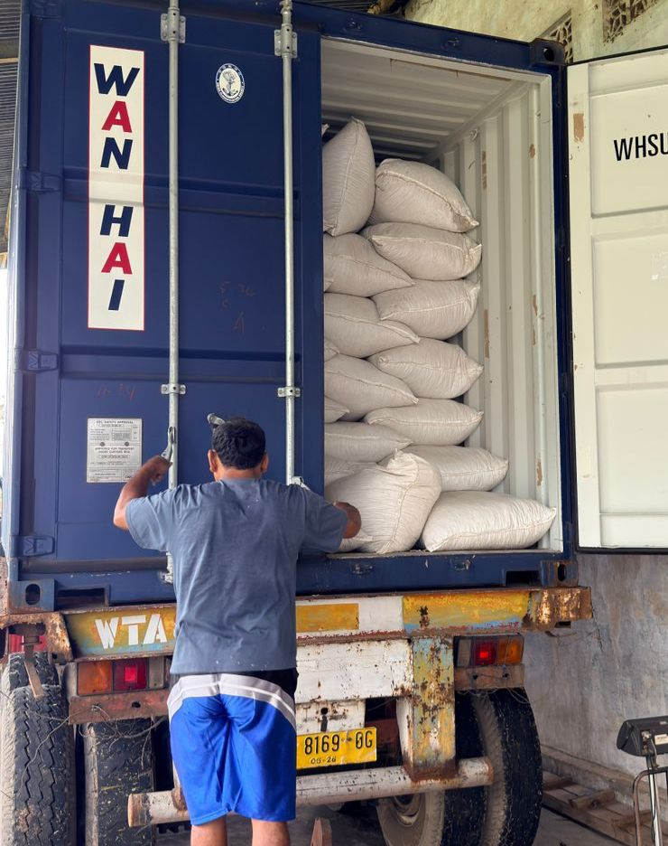

Our vision
To be a trusted trading partner for Indonesian spices, bringing the archipelago’s distinctive products to global markets.
Your Indonesian Spices Trading Partner
Mitra Dagang Rempah Nusantara Anda · 您印尼香料贸易合作伙伴
CV. SAMIN MAKMUR is a company that has been established since 1990, engaged in the export-import of spices such as cardamom, cloves, galangal, Java chili, nutmeg, and all types of spices from the archipelago.
CV. SAMIN MAKMUR是一家成立于1990年的公司，专注于出口和进口香料，如小豆蔻、丁香、姜黄、爪哇辣椒、肉豆蔻以及各种印度尼西亚香料。
Our story
Established in 1990, CV. SAMIN MAKMUR brings long-standing experience in the export and import of Indonesian spices. Our focus remains on building dependable trade partnerships around the richness of the archipelago.
We connect the character of Indonesian spices with the needs of international partners—through clear communication and a lasting trading relationship.
To be a trusted trading partner for Indonesian spices, bringing the archipelago’s distinctive products to global markets.
To build reliable partnerships through responsive trade, careful product handling, and export coordination.
Our work is grounded in the diversity of Indonesian spices and the experience built since 1990.
Explore our existing range of Indonesian spices. For availability and specifications, please contact our team.
 THE SPICE COLLECTION
THE SPICE COLLECTIONCardamom · 小豆蔻
Cloves · 丁香
Galangal · 南姜
Javanese Chili · 爪哇辣椒
Nutmeg · 豆蔻
Black Pepper · 黑胡椒
Ginger · 姜
Other Spices · 其他香料
Experienced in Indonesian spice export-import, we work with partners from product enquiry through export coordination.
A diverse product range rooted in the Indonesian archipelago.
Trading experience since 1990, supporting enduring business relationships.
Trade and shipment communication shaped around each enquiry.
Our trade process is coordinated around the product and destination requirements discussed with each partner.
Share the spice, specifications and destination you have in mind.
Confirm product details and order requirements with our team.
Coordinate product preparation and export requirements for the order.
Align shipping and required documentation for the destination.
Export requirements differ by product and destination. Our team can coordinate applicable registrations, checks and shipment documents for each enquiry.
Discuss your requirementsTell us what you’re looking for. Our team is ready to hear about your product and destination requirements.